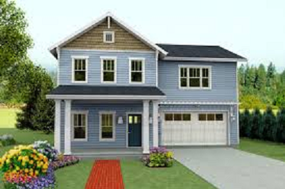

|  |
Chi sono? |
L’attacco di panico è un’esperienza di intenso disagio che si manifesta come un periodo di ansia elevata che in ... |


 |
Sono paure marcate e persistenti per oggetti o situazioni specifiche. La presenza dello stimolo oggetto della ... |
 |
La consulenza on line offre alcuni vantaggi ... |